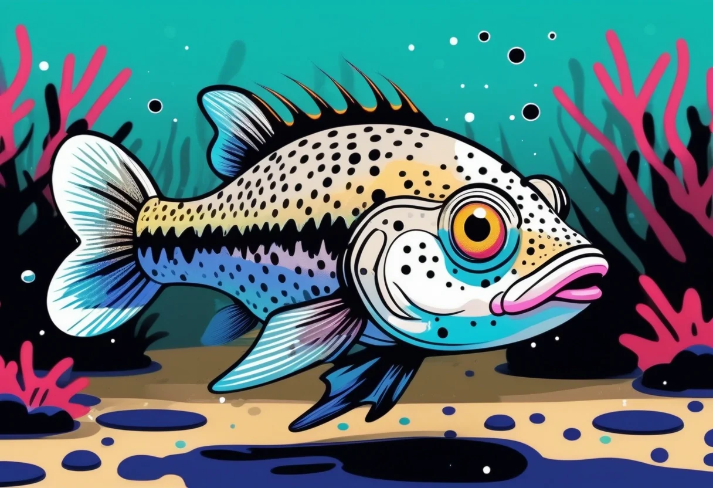

Panzerwelse – auch bekannt als Corydoras oder gepanzerte Welse – zählen zu den beliebtesten Süßwasserfischen in der Aquaristik. Und das aus gutem Grund: Sie sind friedlich, pflegeleicht, äußerst unterhaltsam zu beobachten und in zahlreichen faszinierenden Arten und Farbvarianten erhältlich. Mit ihren charakteristischen Barteln, dem gepanzerten Körper und ihrem lebhaften, schwarmbildenden Verhalten bringen sie Leben und Bewegung auf den Beckenboden jedes Aquariums.
Ihre Beliebtheit verdanken die kleinen Panzerwelse vor allem ihrem ausgeglichenen Wesen. Sie sind ideale Bewohner für Gesellschaftsbecken, da sie keinerlei Aggressionen gegenüber anderen Fischen zeigen. Stattdessen durchwühlen sie in kleinen Gruppen den Bodengrund, auf der Suche nach Futterresten – ein stets amüsantes Schauspiel, das jedem Aquarianer Freude bereitet.
Die Gattung Corydoras ist mit über 170 beschriebenen Arten sehr artenreich. Die meisten Panzerwelse stammen aus den warmen, langsam fließenden und stehenden Gewässern Südamerikas. Ihr Verbreitungsgebiet erstreckt sich von Kolumbien über Venezuela bis nach Argentinien und Uruguay. Besonders artenreich ist das Amazonasbecken, wo die Welse in flachen, pflanzenreichen Uferzonen mit weichem, sandigem Bodengrund leben.
In der Natur halten sich Panzerwelse bevorzugt in klaren, sauerstoffreichen Gewässern auf. Der Bodengrund besteht meist aus feinem Sand oder feinem Kies, in dem die Fische mit ihren Barteln nach Fressbarem suchen. Dieses natürliche Verhalten sollten wir im Aquarium unbedingt berücksichtigen – ein geeigneter Bodengrund ist die Grundvoraussetzung für eine artgerechte Haltung.
Nicht alle Corydoras-Arten stellen die gleichen Ansprüche. Für Einsteiger und fortgeschrittene Aquarianer haben sich folgende Arten besonders bewährt:
Der absolute Klassiker und wohl bekannteste Panzerwels. Er erreicht eine Größe von etwa 6–7 cm und ist in einer bronzenen Grundfärbung mit metallischem Schimmer erhältlich. Es gibt zahlreiche Zuchtformen wie den albino panzerwelse. Diese Art ist extrem robust, verzeiht kleinere Pflegefehler und vermehrt sich unter guten Bedingungen auch im Aquarium. Temperatur: 22–26 °C, pH: 6,0–8,0.
Ein weiterer Einsteigerklassiker. Der gepunktete Panzerwels wird etwa 5–6 cm groß und zeigt ein hübsches Muster aus dunklen Flecken auf hellem Grund. Wie der Metall-Panzerwels ist er sehr anpassungsfähig und zudem einer der kältetolerantesten Corydoras-Arten – er kommt sogar mit Temperaturen um die 18 °C zurecht. Ideal für ungeheizte Aquarien.
Ein echtes Schmuckstück mit auffälligem schwarz-weißem Streifenmuster. Diese Art wird etwa 4–5 cm groß und eignet sich hervorragend für Nano-Becken ab 60 cm Kantenlänge. Sie ist etwas wärmehungriger als andere Arten und fühlt sich bei 24–28 °C am wohlsten.
Mit maximal 2,5–3 cm Körperlänge ist der Zwerg-Panzerwels der Winzling unter den Corydoras. Anders als die meisten Verwandten hält er sich nicht nur am Boden auf, sondern schwimmt auch gerne in der mittleren Wasserschicht. Er benötigt ein gut strukturiertes Becken mit feinem Sand und vielen Pflanzen. Ein Schwarm von mindestens 10 Tieren zeigt das schönste Verhalten.
Die Geschlechtsunterschiede sind bei Panzerwelsen gut zu erkennen, sobald die Tiere ausgewachsen sind. Weibchen sind in der Regel deutlich größer und kräftiger gebaut als Männchen. Besonders von oben betrachtet erkennt man die rundlichere, breitere Körperform der Weibchen. Die männlichen Panzerwelse bleiben kleiner und wirken schlanker. Bei Nachzuchten lassen sich die Geschlechter meist ab einer Größe von etwa 3–4 cm zuverlässig unterscheiden.
Gesunde Zuchtfische und passendes Zubehör für den perfekten Start mit Panzerwelsen.
👉 Panzerwelse & Zubehör bei AmazonPanzerwelse sind Schwarmfische und sollten niemals einzeln oder in zu kleinen Gruppen gehalten werden. Eine Gruppe von mindestens 5–6 Tieren ist Pflicht, besser sind 8–12 Exemplare. Nur im Schwarm zeigen sie ihr natürliches, interessantes Verhalten.
Die empfohlene Mindestbeckengröße richtet sich nach der Art:
Der Bodengrund spielt eine entscheidende Rolle. Panzerwelse haben empfindliche Barteln, mit denen sie im Substrat nach Futter suchen. Scharfer Kies ist absolut tabu – er kann die Barteln verletzen und zu Infektionen führen. Optimal ist feiner Sand oder abgerundeter, feiner Kies mit einer Korngröße von maximal 1–2 mm. Eine Schichthöhe von 3–5 cm reicht völlig aus.
Panzerwelse gelten zu Recht als robuste Fische, dennoch sollten die Wasserwerte im optimalen Bereich liegen, um Krankheiten vorzubeugen und das Wohlbefinden zu fördern:
Ein wöchentlicher Wasserwechsel von 25–30 % des Beckenvolumens ist empfehlenswert. Verwende am besten einen Wasseraufbereiter, um Schadstoffe wie Chlor und Schwermetalle aus dem Leitungswasser zu neutralisieren. Ein Tropfen-Testkit ist genauer als Teststreifen – regelmäßige Kontrollen sind Pflicht, besonders in der Einfahrphase des Aquariums.
Panzerwelse sind ausgesprochen friedliche und verträgliche Fische. Sie lassen sich hervorragend mit vielen anderen Aquarienbewohnern vergesellschaften. Wichtig ist, dass die Mitbewohner ebenfalls nicht aggressiv sind und die Welse nicht als Futter betrachten. Gute Partner sind:
Nicht geeignet: Große, räuberische Fische wie Skalare, Diskus, größere Buntbarsche, Arowanas oder größere Welsarten – sie sehen Panzerwelse als Beute an. Auch zu lebhafte oder aggressive Fische wie Sumatrabarben sollten vermieden werden, da sie die Panzerwelse stressen können.
Panzerwelse sind Allesfresser und nehmen sowohl pflanzliche als auch tierische Nahrung auf. In der Natur ernähren sie sich vor allem von Insektenlarven, Kleinkrebsen und Detritus. Im Aquarium sollten wir eine abwechslungsreiche Kost anbieten:
Wichtig: Panzerwelse sind Bodenbewohner und brauchen Futter, das schnell auf den Boden sinkt. Achte darauf, dass genügend Futter unten ankommt, bevor die anderen Fische alles wegfressen. Am besten gibst du das Futter abends oder nutzt spezielle sinkende Tabletten. Futterreste solltest du nach spätestens 30 Minuten entfernen, um die Wasserqualität nicht zu belasten.
Die Nachzucht von Panzerwelsen ist nicht schwer und gelingt auch Einsteigern oft überraschend gut. Der Auslöser für die Laichbereitschaft ist meist ein Kaltwasserwechsel – ein Wechsel mit etwas kühlerem Wasser simuliert die Regenzeit in der Natur.
Das Weibchen legt die Eier (ca. 10–30 Stück) bevorzugt an Pflanzen, Scheiben oder auf feinfiedrigen Moosen ab. Nach der Eiablage solltest du die Eltern von den Eiern trennen, da sie gelegentlich den eigenen Laich fressen. Die Larven schlüpfen nach 4–7 Tagen und zehren zunächst von ihrem Dottersack. Nach weiteren 2–3 Tagen beginnen die Jungfische zu schwimmen und können mit feinstem Staubfutter oder Artemia-Nauplien gefüttert werden.
Aufzucht-Tipp: Jungfische wachsen am besten in einem flachen, gut bepflanzten Aufzuchtbecken mit täglichem, kleinem Wasserwechsel und feinem Futter. Nach etwa 3–4 Monaten sind die Jungtiere geschlechtsreif.
Panzerwelse sind die fröhlichen Clowns des Aquariums. Ihre verspielte Art und ihr ausgeprägtes Schwarmverhalten machen sie zu einem der unterhaltsamsten und gleichzeitig pflegeleichtesten Aquarienfische überhaupt.
Panzerwelse sind robuste Fische, die bei guten Haltungsbedingungen selten krank werden. Dennoch können folgende Probleme auftreten:
Vorbeugung ist der beste Schutz: Regelmäßige Wasserwechsel, gute Filterung, nicht überfüttern und konstante Wasserwerte – dann bleiben deine Panzerwelse gesund und aktiv.
Wasseraufbereiter, Welsfutter und Pflegezubehör für gesunde Panzerwelse.
👉 Pflegeprodukte bei Amazon entdeckenPanzerwelse sind Schwarmfische und benötigen eine Gruppe von mindestens 5–6 Artgenossen. Noch besser sind 8–12 Tiere. Nur dann zeigen sie ihr natürliches Verhalten und fühlen sich sicher.
Ja, absolut! Panzerwelse sind friedliche Fische, die Garnelen weder jagen noch fressen. Sie sind ideale Mitbewohner für ein Gesellschaftsbecken mit Garnelen. Besonders gut harmoniert die Haltung mit Neocaridina-Arten wie Red Cherry Garnelen.
Feiner Sand oder feiner, abgerundeter Kies mit einer Korngröße von maximal 1–2 mm. Scharfer Kies verletzt die empfindlichen Barteln und sollte unbedingt vermieden werden.
Bei guter Pflege und artgerechter Haltung erreichen Panzerwelse ein stattliches Alter von 5–10 Jahren. Einige Arten wie der Metall-Panzerwels (C. aeneus) können sogar bis zu 15 Jahre alt werden.
Eine leichte bis moderate Strömung ist ideal, da Panzerwelse aus Fließgewässern stammen. Zu starke Strömung ist jedoch zu vermeiden – die Tiere sollten sich jederzeit zurückziehen können.
Panzerwelse sind eine hervorragende Wahl für Aquarianer aller Erfahrungsstufen. Sie sind friedlich, pflegeleicht, faszinierend zu beobachten und in einer riesigen Artenvielfalt erhältlich. Mit einem feinen Sandboden, einer Gruppe von mindestens 5–8 Artgenossen, optimalen Wasserwerten und abwechslungsreicher Ernährung wirst du lange Freude an deinen gepanzerten Mitbewohnern haben. Ob als Erstbesatz für Einsteiger oder als Bereicherung für erfahrene Aquarianer – Panzerwelse bereichern jedes Aquarium.
Mehr zur Einrichtung eines artgerechten Aquariums erfährst du in unserem Einsteiger-Guide und in unserem Vergesellschaftungs-Guide.